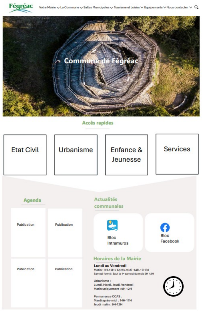
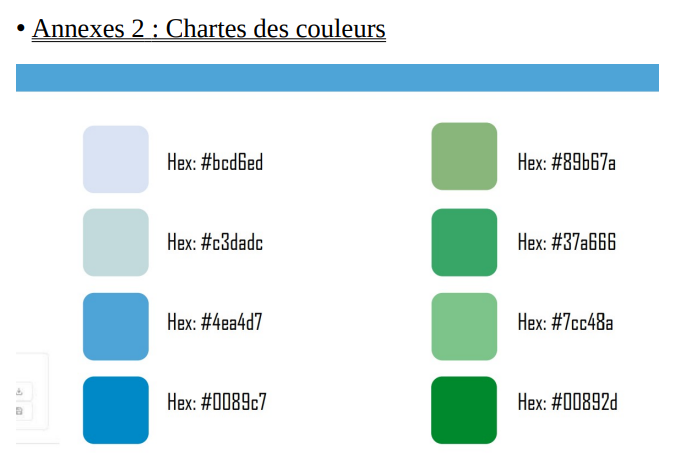
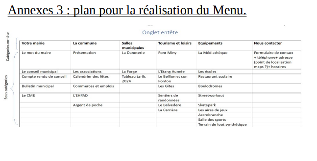

Projet - Site Web de la Mairie de Fégréac
Description du projet
Ce projet a été réalisé dans le cadre d’un stage au sein du service DSI de Redon Agglomération. Il visait à moderniser et restructurer le site internet de la mairie de Fégréac en s’appuyant sur le CMS WordPress et le thème Avada.
L’objectif principal était de proposer une interface claire, moderne et responsive, tout en respectant la charte graphique fournie par la mairie. Une première maquette a été réalisée puis présentée lors d’une réunion avec les responsables du service.
Le travail s’est appuyé sur les éléments suivants :
- La maquette de la page d’accueil
- La charte graphique de la mairie
- Un plan détaillé du menu et des différentes pages
- Les contenus de l’ancien site web de Fégréac pour la récupération des informations
Le site a été développé à l’aide de l’éditeur visuel Avada Live, permettant une personnalisation intuitive via des modules de glisser-déposer. L’ensemble des pages a été conçu de manière à reprendre les structures communes aux différents sites du service mutualisé de Redon Agglomération.
Documents fournis par la mairie
Afin de guider la conception du site web, la mairie de Fégréac a fourni plusieurs documents essentiels. Ces éléments ont permis de respecter leur identité visuelle et de structurer les contenus selon leurs attentes.
- Maquette de la page d'accueil : référence principale pour le design général du site.
- Charte des couleurs : document précisant les codes couleur à respecter.
- Plan de maquette du menu : schéma listant les pages à créer et leur organisation dans le menu de navigation.
Maquette page Accueil :

Charte des couleurs

plan pour la réalisation du menu

Avancement du projet
Le projet de création du site de la mairie de Fégréac s’est articulé autour de plusieurs étapes clés, réparties sur la période du 21 avril au 6 juin 2024. Chaque phase a permis de construire progressivement une plateforme web claire, ergonomique et fidèle aux attentes de la collectivité.
-
1. Mise en place de la structure globale du site
À partir du plan de menu fourni, toutes les pages ont été créées dans WordPress puis regroupées dans un en-tête commun à l’aide du thème Avada. Ce header est affiché sur chaque page du site afin d’assurer une navigation cohérente.
-
2. Réalisation de la page d’accueil
La page principale a été conçue en suivant fidèlement la maquette transmise par la mairie. Le design a été ajusté avec les options visuelles du thème Avada et la charte des couleurs pour un rendu professionnel et moderne.
-
3. Développement des pages du menu principal
Chaque page du menu (présentation de la commune, services municipaux, vie associative, etc.) a été créée et alimentée en contenu. Pour cela, les textes, images et informations de l’ancien site ont été réutilisés et modernisés.
-
4. Intégration des pages génériques mutualisées
Conformément aux standards des sites du service commun de Redon Agglomération, des pages supplémentaires ont été intégrées, comme :
- Les chiffres clés
- La situation géographique
- Les élus et le mot du maire
- Les comptes rendus et actes administratifs
- Les démarches en ligne, les écoles, le restaurant scolaire
- Les commerces, les associations, le patrimoine
- Les mentions légales, l’accessibilité et le plan du site
-
5. Ajustements graphiques et homogénéisation
Les dernières étapes ont consisté à affiner la mise en page, ajuster les styles CSS selon la charte graphique, et s'assurer que toutes les pages étaient bien cohérentes entre elles, que ce soit au niveau des polices, couleurs, espacements ou hiérarchie de contenu.
Ce projet a été mené de manière progressive avec une logique de construction modulaire. Chaque étape a permis d’apporter une valeur ajoutée et d’assurer une livraison finale conforme aux attentes fonctionnelles et esthétiques de la mairie.
Présentation du thème Avada
Pour la création du site de la mairie de Fégréac, le thème Avada a été choisi comme base de développement. Il s'agit d’un thème premium pour WordPress, reconnu pour sa polyvalence, ses nombreuses options de personnalisation, et sa compatibilité avec de nombreux plugins.
Voici les principales fonctionnalités qui ont facilité la conception du site :
-
Fusion Builder (Avada Builder) : un éditeur visuel par glisser-déposer qui permet de créer des pages complexes sans coder, tout en gardant un contrôle précis sur la structure.
-
Démos prêtes à l’emploi : possibilité d’importer des modèles existants et de les adapter selon les besoins du projet.
-
Options de personnalisation avancées : gestion des typographies, couleurs, espacements, arrière-plans, effets visuels (parallaxe, transitions), etc.
-
Responsive design : les pages s’adaptent automatiquement à tous les formats d’écran (ordinateurs, tablettes, mobiles).
-
Performance et SEO : Avada propose un code optimisé pour un chargement rapide des pages et une bonne indexation par les moteurs de recherche.
-
Mises à jour régulières : le thème est activement maintenu par son équipe de développement, garantissant une bonne sécurité et compatibilité dans le temps.
L’utilisation d’Avada a donc permis de respecter à la fois les exigences techniques de l’agglomération et les attentes graphiques de la mairie, tout en assurant une bonne évolutivité du site dans le futur.
Structure et création des pages
Chaque page du site a été créée en utilisant le CMS WordPress avec l’éditeur visuel Avada Builder. Ce constructeur permet de concevoir les pages à l’aide de blocs (ou "éléments") que l’on peut positionner librement, sans écrire de code.
Lors de la création d'une page, les étapes suivantes sont généralement respectées :
-
1. Création d’une nouvelle page : à partir du tableau de bord WordPress, une page est ajoutée et nommée selon la structure fournie (ex. : “Vie associative”, “Élus”, “École”).
-
2. Ajout au menu de navigation : une fois la page créée, elle est intégrée dans le menu principal via l’interface “Apparence > Menus” afin d’être accessible depuis toutes les pages du site.
-
3. Construction du contenu avec Avada : grâce à Avada Builder, la page est structurée avec des sections, des lignes et des colonnes. Chaque partie peut contenir des éléments comme :
- Blocs de texte
- Images et galeries
- Listes, tableaux ou icônes
- Boutons ou liens vers d’autres pages
-
4. Respect de la charte graphique : les couleurs, polices, marges et styles sont appliqués en accord avec les consignes transmises par la mairie de Fégréac (cf. charte des couleurs).
-
5. Test et ajustement : chaque page est pré-visualisée pour vérifier son bon affichage sur différents appareils, et ajustée si nécessaire pour optimiser la lisibilité et la navigation.
Cette méthode de travail assure une uniformité graphique sur l’ensemble du site, tout en permettant une mise à jour rapide et intuitive des contenus par les administrateurs de la mairie.